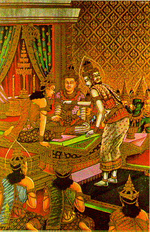
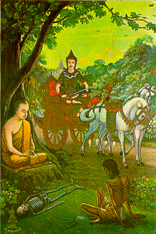

BuddhaSasana Home Page
This document is written in Vietnamese, with
Unicode Times font
| 07 | 08 |
|  |  |
| Wedding Ceremony: The gods gave the
holy water from the conch when Prince Siddhatha married Princess Yasodhara. The prince was
very happy in his three palaces all days and nights. Lễ Thành hôn: Các vị trời đến rải nước chúc phúc từ vỏ sò khi Thái tử Sĩ-đạt-đa kết hôn với Công chúc Da-du-đà-la. Thái tử sống hạnh phúc trong ba cung điện trong mọi ngày và đêm. |
One day Prince Siddhattha went into
the city and saw the four signs of and old man, a man afflicted with a loathsome, a
corpse, and an ascetic. He appreciated the last one. Ngày nọ, Thái tử Sĩ-đạt-ta dạo chơi trong thành và thấy bốn dấu hiệu của một ông già, một người bệnh hoạn, một tử thi, và một ẩn sĩ. Ngài trân quý dấu hiệu sau cùng. |
[Mục Lục][01-02][03-04][05-06][07-08][09-10][11-12][13-14]
[15-16][17-18][19-20][21-22][23-24][25-26]][27-28][29-30][31-32]
Source: Post Cards from S. Dhumphakdi & Sons Publisher, Bangkok, Thailand